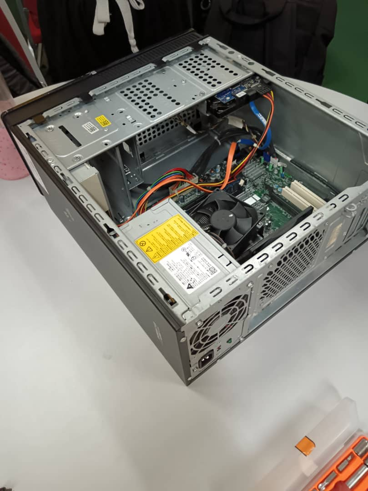
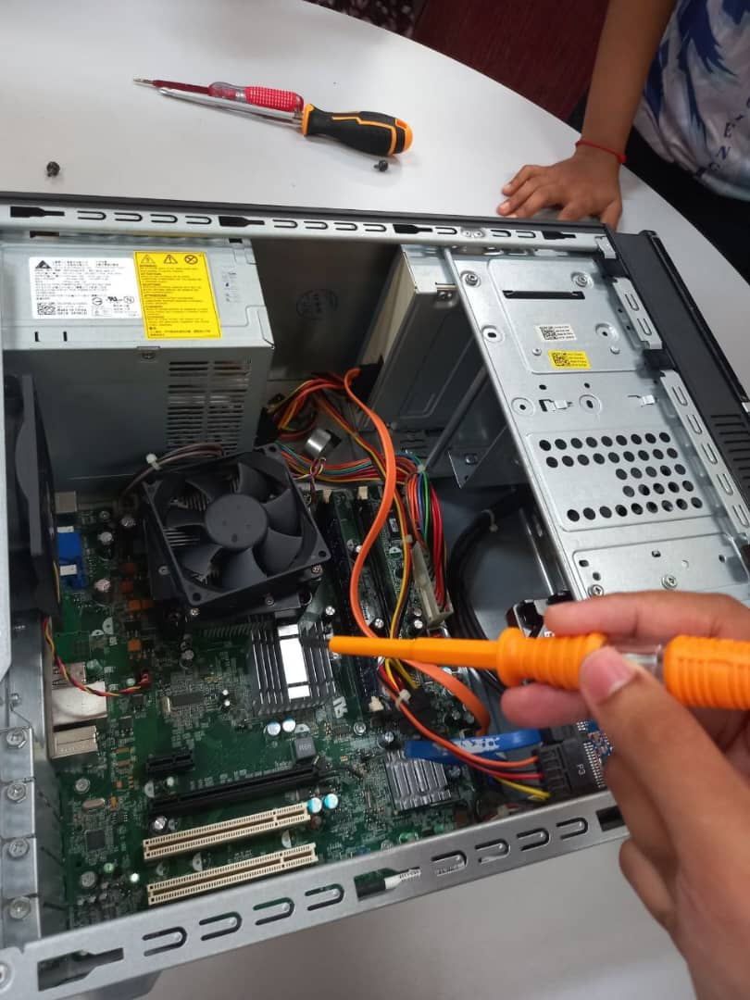

PC Assembly Class
I attend pc assembly class on 20th October 2024 to learn about component in the cpu.
Click here to see our process.
PC Assemble

After we open the PC

During the process to dissemble the compartment

The inside of the cpu
My Reflection
Assemble and dissemble a CPU was an eye-opening experience that deepened my understanding of computer hardware. Assembling each component—from installing the processor and applying thermal paste to connecting the motherboard, RAM, and power supply—taught me the importance of precision and compatibility. Through this hands-on experience, I gained a better grasp of how each part contributes to overall system performance. It also reinforced my problem-solving skills, as I had to troubleshoot boot errors and cable management issues. This experience has strengthened my confidence in handling hardware and sparked my interest in further exploring computer architecture and system optimization.